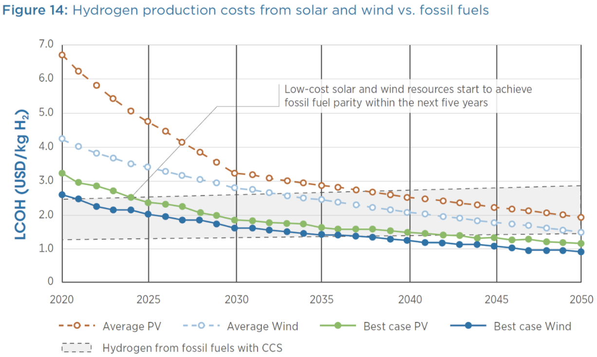

Green hydrogen cost-competitive with fossil
Hydrogen is a remarkable energy carrier that can be used in many industrial processes, like primary steel-making, where electricity is an option or not competitive. Today’s hydrogen is made from fossil fuels, primarily natural gas. It’s also possible to make hydrogen from electricity and water through electrolysis - splitting the H2O molecule into separate hydrogen and oxygen. When the electricity is from a carbon-free source, it is called green hydrogen. And it holds promise for decarbonizing industrial processes, for storing energy for weeks or months to back up variable renewables, and as a chemical step in making carbon-neutral fuels to power aircraft and international shipping.
Green hydrogen costs will decline sharply in the years ahead for multiple reasons:
- 1. Declining electrolyzer costs. Currently, electrolyzers, the devices that use electricity to split water into hydrogen and oxygen, are extremely expensive. However, data shows that electrolyzers have a fast learning rate of roughly 20 percent cost reduction per doubling in scale. Europe, Japan, and China have announced ambitious plans to scale hydrogen electrolyzers. Over the next decade, this scaling will reduce the capital cost of electrolyzers tremendously.
- 2. Plunging clean electricity costs. The second factor in the cost of green hydrogen is the cost of clean electricity. As we’ve seen, the cost of electricity from solar is plunging in price and wind power is also dropping in price substantially.
Novel approaches for green hydrogen will also arrive. Our portfolio company Heliogen uses modular, AI-directed mirrors to concentrate solar energy, allowing for extremely low-cost hydrogen production.
In combination, these technology pathways point to green hydrogen made from sun and wind that’s cost competitive with fossil hydrogen by the early part of the 2030s, as the analysis from IRENA shows.
